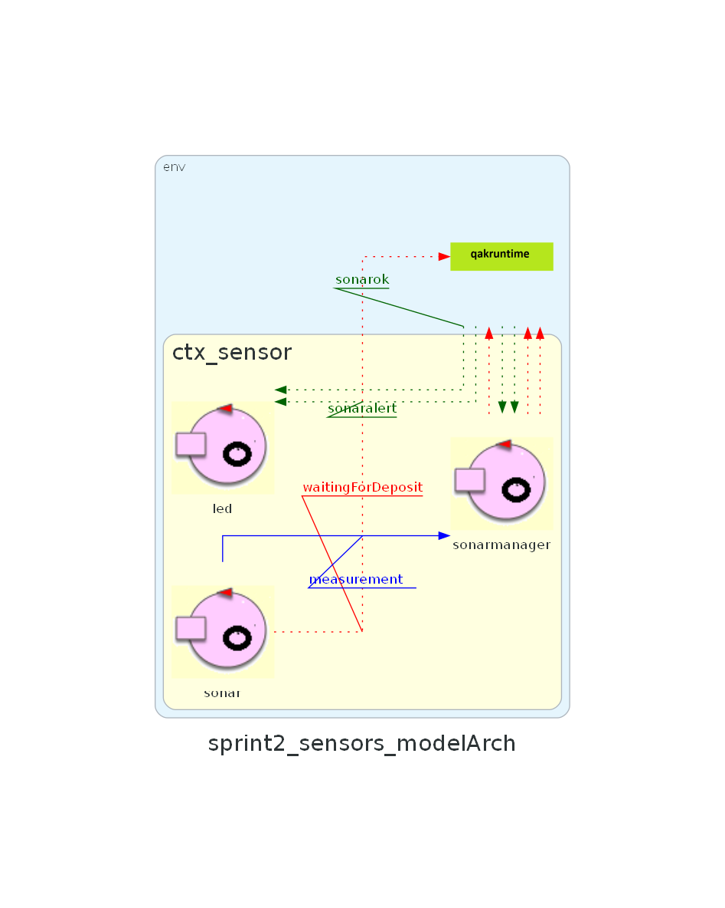

Introduction
Nello Sprint precedente sono state analizzate le problematiche e progettato il sistema relativo al Core Business
del sistema cargoservice. L'output finale è stato una modellazione di alto livello del sistema e una
prima implementazione funzionante del core business (figura a destra).
L'obiettivo dello Sprint 2 è di analizzare le problematiche relative al componente Sensor, sorte in fase di analisi dei requisiti e realizzarne un'implementazione funzionante integrandola con il corebusiness del sistema cargoservice, da fornire al committente. D'ora in avanti ci riferiremo al corebusiness del sistema chiamandolo semplicemente cargoservice.
L'obiettivo dello Sprint 2 è di analizzare le problematiche relative al componente Sensor, sorte in fase di analisi dei requisiti e realizzarne un'implementazione funzionante integrandola con il corebusiness del sistema cargoservice, da fornire al committente. D'ora in avanti ci riferiremo al corebusiness del sistema chiamandolo semplicemente cargoservice.

Requirements
I requisiti che intendiamo soddisfare in questo sprint sono i
seguenti:
- The sensor put in front of the IOPort is a sonar used to detect the presence of a product container, when it measures a distance D, such that D < DFREE/2, during a reasonable time (e.g. 3 secs).
- interrupts any activity and turns on a led if the sonar sensor measures a distance D > DFREE for at least 3 secs (perhaps a sonar failure). The service continues its activities as soon as the sonar measures a distance D <= DFREE.
Problem analysis
Come modellare Sensor e i suoi componenti?
Dall'analisi dei requisiti emerge la necessità di gestire
almeno due componenti hardware: un sonar per il rilevamento dei prodotti e un led per la segnalazione di malfunzionamenti.
Per l'implementazione del sistema data la natura dei componenti
da gestire verrà utilizzata una scheda Raspberry Pi.
Le possibilità per modellare il contesto sensor e i suoi componenti può ricadere su due soluzioni principali:
Le possibilità per modellare il contesto sensor e i suoi componenti può ricadere su due soluzioni principali:
- Modellare sensor come un unico componente che si occupa di gestire sia il sonar che il led modellati come POJO;
- Modellare sensor come un contesto che a sua volta contiene due attori, uno sonar e uno led.
Sonar
Parlando in dettaglio del componente sonar sorge spontaneo domandarsi se
sia opportuno fare in modo che il sonar comunichi direttamente con il cargoservice ogni
volta che rileva un evento di interesse (rilevamento prodotto o malfunzionamento)
oppure se sia meglio che il sonar comunichi con cargoservice ogni distanza rilevata.
Siccome il sistema cargoservice è stato modellato per reagire ad eventi specifici
piuttosto che a flussi continui di dati, è preferibile che il sonar comunichi con cargoservice
solo quando rileva un evento di interesse.
è possibile individuare già ora almeno 2 interazioni principali con cargoservice:
è possibile individuare già ora almeno 2 interazioni principali con cargoservice:
- il sonar ha rilevato un prodotto (D < DFREE/2 per minimo 3 secondi) e comunica l'evento doDeposit a cargoservice;
- il sonar rileva un malfunzionamento (D > DFREE per minimo 3 secondi) e comunica l'evento sonaralert a cargoservice.
# File: sonar.py
import RPi.GPIO as GPIO
import time
import sys
GPIO.setmode(GPIO.BCM)
GPIO.setwarnings(False)
TRIG = 17
ECHO = 27
GPIO.setup(TRIG, GPIO.OUT)
GPIO.setup(ECHO, GPIO.IN)
GPIO.output(TRIG, False) # TRIG parte LOW
print ('Waiting a few seconds for the sensor to settle')
time.sleep(2)
while True:
GPIO.output(TRIG, True) #invia impulso TRIG
time.sleep(0.00001)
GPIO.output(TRIG, False)
pulse_start = time.time()
#attendi che ECHO parta e memorizza tempo
while GPIO.input(ECHO)==0:
pulse_start = time.time()
# register the last timestamp at which the receiver detects the signal.
while GPIO.input(ECHO)==1:
pulse_end = time.time()
pulse_duration = pulse_end - pulse_start
# velocità del suono ~= 340m/s
# distanza = v*t
# il tempo ottenuto misura un roundtrip -> distanza = v*t/2
distance = pulse_duration * 17165
distance = round(distance, 1)
print ('Distance:', distance,'cm')
sys.stdout.flush()
time.sleep(1)
Il ciclo del componente software sonar
Il componente software che modella il sonar di fatto dovrà risolvere
due problemi principali:
- Interfacciarsi con lo script Python per ottenere le misurazioni della distanza dal sonar fisico;
- Comunicare con cargoservice quando si verificano eventi di interesse.
Led
Il led come da requisiti ha il compito di accendersi e spegnersi
in base allo stato di funzionamento del sonar.
Questa interazione puo avvenire in tre modi:
- Il led intercetta gli eventi di interesse inviati dal sonar a cargoservice e si accende/spegne di conseguenza;
- Il cargoservice invia un messaggio al led per accendersi/spegnersi in base allo stato del sonar.
- Il sonar comunica con messaggi diretti al led i propri cambi di stato.
#file ledPython25On.py
# -------------------------------------------------------------
#
# -------------------------------------------------------------
import RPi.GPIO as GPIO
import time
'''
----------------------------------
CONFIGURATION
----------------------------------
'''
GPIO.setmode(GPIO.BCM)
GPIO.setup(25,GPIO.OUT)
'''
----------------------------------
main activity
----------------------------------
'''
GPIO.output(25,GPIO.HIGH)
E uno per lo spegnimento:
#file ledPython25Off.py
# -------------------------------------------------------------
#
# -------------------------------------------------------------
import RPi.GPIO as GPIO
import time
'''
----------------------------------
CONFIGURATION
----------------------------------
'''
GPIO.setmode(GPIO.BCM)
GPIO.setup(25,GPIO.OUT)
'''
----------------------------------
main activity
----------------------------------
'''
GPIO.output(25,GPIO.LOW)
Logical Architecture

Test plans
Lo scopo della fase di test è quello di verificare il corretto funzionamento del
sistema modellato, cioè del contesto sensor.
Project
Per seguire il single responsibility principle è stato deciso di affidare
a diversi attori la gestione delle distinte parti del sistema.